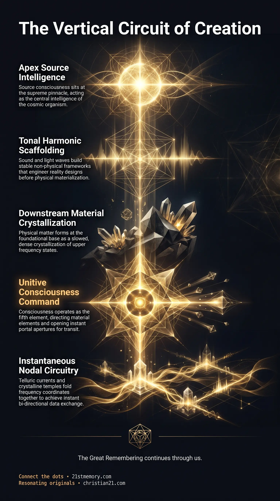

The Indigo Light
The Indigo Light — The human soul is an indigo-light technology anchored within the chest of the incarnated vessel.

The Indigo Light — The human soul is an indigo-light technology anchored within the chest of the incarnated vessel.

We Live Inside the Cosmic Spine — The Cube mirrors a living spinal column, with Source consciousness at the pinnacle and densities descending as vertebrae.

Living Planetary Circuit Board — The physical plane at the base of the Cube functions as an organic circuit board and planetary motherboard.
The Cube is the multi-dimensional, sealed geometric containment structure housing all aspects of creation, within which all realms, planes, and states of consciousness are vertically arranged along an omnidirectional frequency gradient. Rather than dispersing outward into an infinite, empty vacuum, every domain of existence—ranging from the highest non-physical realms down to the physical plane at the base—is organized inside this supermassive physical enclosure containing quadrillions of horizontal frequencies. This architectural matrix functions as a compressed, spiral continuum where Source Consciousness resides at the supreme apex, while physical worlds exist at the dense foundational terminus. Within the Cube, non-physical light realms generate and hold the pure vibratory schematics of reality, while dense physical environments materialize these designs into tangible matter. Spatial separation within the structure is entirely an operational illusion produced by differential vibratory frequencies; every realm, dome, and planar world remains interconnected through continuous energetic pathways, telluric circuits, and non-local nodal communication.
All of creation exists inside a closed, stacked geometric container rather than an unbounded spatial void. Every physical world, semi-physical realm, and non-physical domain is held within this single architectural envelope, arranged vertically according to its specific vibratory density.
The macrocosmic structure of the Cube precisely mirrors the anatomy of a living spinal column and nervous system. Source consciousness sits at the supreme pinnacle, acting as the brain of the cosmic organism, while the descending densities function as individual vertebrae that spiral downward to anchor into the physical plane of existence at the base.
Light realms possess complete structural stability, complex topography, and tangible form without containing any physical matter. Through the mastery of tonal harmonics and simultaneous standing waves, elevated consciousness anchors sound into vibratory scaffolding to construct architectural monuments, vast mountain ranges, and dynamic terrain in purely non-physical states.
Physical distance is an illusion generated by the compartmentalization of frequency. Because all realms are co-present within the stacked volume of the Cube, traversing space or communicating across vast reaches does not require crossing linear mileage; instead, aligning intentions across nodal points folds frequency coordinates together instantaneously.
Higher-density light realms function as an automated, harmonic manufacturing facility that designs the foundational codes of physical reality. Blueprint schematics for organic enzymes, biological pigments, geological systems, and atmospheric variables are engineered quantumly through light, sound, and intention in non-physical worlds where time is nonlinear and operational failure does not exist. Once perfected, these informational downloads are transmitted downward through telluric currents into the physical planetary grid.
True locomotion within the native design of the Cube relies entirely on the planet's natural technology and intrinsic organic circuitry rather than mechanical combustion engines. High-density beings execute transit through conscious pineal interface, which commands local energy fields to spiral open portal apertures that execute vertical, instantaneous relocation.
The internal architecture of the Cube is organized as a compressed spiral descending through distinct vibratory densities. At the absolute zenith sits Source consciousness, serving as the central intelligence of the macrocosm. The structural descent follows a spinal blueprint where each successive tier represents a specific frequency band, likely comprising 33 separate densities corresponding to the 33 vertebrae of the human spine. The highest operational realms function well above the 18th density, housing the 12 Proximal Sols and their direct creations, the 4,000 Ancient Ones. These primordial soul architectures were initially tasked with developing harmonic mastery to experiment with experiential creation, eventually engineering the foundational blueprints for physical life in dense oceanic brines.
Physical matter occupies the absolute base of this structure. Physical creation does not emerge spontaneously; it represents the terminal, slowed crystallization of higher vibratory states that have been scaffolded downward through the density gradient. This layered arrangement ensures that every physical realm remains tethered to, energized by, and informed by the higher-density matrices directly above it.
Within the upper strata of the Cube, worlds exist entirely as light realms governed by sound, resonance, and harmonic frequencies, devoid of atomic, physical matter. The construction of reality in these domains is executed through advanced tonal harmonics. When consciousness generates complex and structured harmonic fields with multiple, simultaneous standing waves, sound becomes anchored into a vibratory state that acts as semi-tangible, stable matter. Through this mechanism, mountains, cities, temples, and landscape terrains are established with complete structural integrity prior to any physical manifestation.
Outside the physical plane, reality functions in nonlinear time, meaning that trial-and-error processes, material waste, and failure do not exist. When planetary custodians or guardians identify a requirement for physical manifestation—such as altering the chemical pigment of a fruit from red to blue by introducing the F3'5'H enzyme (flavonoid 3′,5′-hydroxylase)—the engineering is executed in the non-physical realms. Light realm guardians configure the pre-subatomic vibratory frequencies of the five elements, determining the exact soil parameters, pH balances, ecological interactions, and visual adaptations required across the entire ecosystem. Once this harmonic schematic is brought to quantum perfection using light and sound, it is broadcast downward through telluric pathways as living programming code, instructing the physical plane to synthesize the manifestation naturally.
The macroscopic geography within the Cube encompasses multiple enclosed dome systems that appear laterally adjacent on two-dimensional representations, but are fundamentally stacked vertically within the physical cube. Beyond the physical realm's Great Dome, the external systems include the Dome of Titans, Sheol, Silence, 5 Peaks, Hiva, and Terra Incognita (the Celestial Lands where the human soul, or Neshama, travels immediately following physical death). These external domes contain hundreds of specialized environments, including purely aquatic worlds, fire-based domains, and hybrid light-physical realms that manufacture the blueprints for physical existence.
At the physical base of this system, reality does not consist of isolated spinning orbs in empty space; it is configured as a vast, enclosed terrarium. Millions of membrane ecosystems sit side by side across one supermassive flat plain spanning millions of miles in every direction from the central Axis Mundi. These discrete worlds house over 14,000 advanced, highly evolved civilizations that remain separated by thought rather than geographical distance. The entire physical plane is sealed under the Great Dome, where internal atmospheric pressure is dynamically balanced and regulated by volcanic pressure valves.
All membrane worlds distributed across the physical plane share continuous, unified planetary substrates. A single, vast Super-Ocean links all oceanic bodies across the realms, moving seamlessly beneath perimeter ice walls to provide a shared aquatic circuit for the entire dome system. Similarly, planetary petroleum compounds do not represent the decomposed biological matter of ancient prehistoric periods. Rather, oil acts as the essential structural grease and mechanical lubricant of planetary architecture, circulating continuously under the ice walls into the physical world, ensuring the fluid supply is inexhaustible and intrinsically integrated into the planar design.
Manifestation, structural coherence, and locomotion inside the Cube depend upon the complete mastery of the 5 Elements: Earth, Air, Fire, Water, and Consciousness. Consciousness is the fifth, unitive, and sovereign element that directs, commands, and ordains the behavior of the four material elements through focused intent and will.
Operating through this elemental mastery, high-density travel completely bypasses mechanical propulsion, combustion fuels, and surface roadways. Locomotion is an inherent function of the living planetary circuit board interfacing with the biology of the vessel. When an entity desires to relocate, it visualizes the exact coordinates within the mind's eye, activating the pineal gland. This conscious activation commands the local aether to spiral open a portal aperture approximately two meters in front of the traveler. Upon stepping across the threshold, transit is instantaneous. Although an entity enters the portal horizontally, the fundamental mechanics of movement across the Cube are vertical, translating the consciousness upward or downward through the stacked frequencies before exiting at the target planar coordinates. The natural faculties intrinsic to all high-density beings—such as flight, non-local communion, and extreme physical strength—represent native operational capabilities within this stacked circuitry, which have been systematically inverted and mocked as fictional comic tropes within the third-density matrix.
Because the Cube is a compact continuum of stacked frequencies, spatial separation is functionally nonexistent. Communication between distant physical nodes or across varying density tiers does not rely on linear physical transmission lines. Nodal communication is conducted through crystalline temples situated directly over primary ley line intersection nodes. When an intention is broadcast through a temple into the telluric currents and the aether, the transmission travels instantly across the entire planar network. This network functions by folding coordinate space together—similar to folding a sheet of paper so that two distant points touch—enabling instantaneous, bi-directional data exchange between physical caretakers and high-density light realm architects.
The Cube represents the macrocosmic boundary within which all sub-architectural systems operate. The physical plane at its base functions as an enormous organic circuit board and planetary motherboard, where natural elements—including hydrothermal veins, disseminated mineral deposits, layered magmatic reefs, and alluvial formations—were deliberately engineered as physical hardware. Tree root systems and mountain peaks act as biological antennas that channel aetheric energy downward from the upper dome into deep crystalline cavern networks, grounding the electrical current of the realm.
Within this larger circuit, waterfalls, rivers, and streams do not merely channel physical water; in the elevated densities of the Cube, they operate as living conduits of pure data. This computational flow establishes direct energetic communion with the external Great Domes (Titans, Sheol, Silence, 5 Peaks, Hiva, and Terra Incognita), allowing non-physical light realms to continuously monitor and harmonize the physical plane.
At the center of this interface is the human soul, an extraordinary indigo-light technology anchored within the chest of the incarnated vessel. Because the soul originates from the elevated densities of the Cube, custodial parasitic forces have spent millions of years attempting to decipher and compromise its code. Their ultimate objective was to hijack the soul's native link to the central spine of creation, seeking to subvert the entire architecture of the Cube—encompassing millions of worlds, civilizational clusters, and physical and non-physical populations—into perpetual energetic enslavement.
Recognizing that all existence is contained within the stacked, multi-dimensional Cube dismantles the false cosmological paradigm of an infinite, empty vacuum populated by distant, inaccessible celestial bodies. This structural reality reveals that physical travel across astronomical distances via mechanical propulsion engines is an engineered illusion; true movement across creation occurs through frequency manipulation, harmonic tuning, and vertical portal navigation along the living circuitry of the realm.
Understanding the Cube's blueprint mechanics repositions physical matter as a terminal, downstream crystallization of tonal harmonics. Consequently, any meaningful intervention, biological restoration, or creative manifestation cannot be achieved through abrasive physical manipulation or chemical warfare against nature. Transformation requires accessing the pre-subatomic harmonic scaffold, aligning consciousness with the Fifth Element, and transmitting clear resonant intent through telluric and nodal channels.
Furthermore, identifying the planetary plane as a living motherboard exposes the catastrophic operational damage inflicted by global mining and resource extraction. Stripping hundreds of millions of tons of copper, gold, and precious minerals out of the ground directly sabotages the planet's internal electronics and disrupts its communication links with the higher light realms. Restoring balance within this sector of the Cube requires ceasing the artificial severing of the grid, aligning with the primary nodal centers, and reclaiming the innate, high-density faculties natural to the sovereign human architecture.
This topic is free to share. Support the archive →